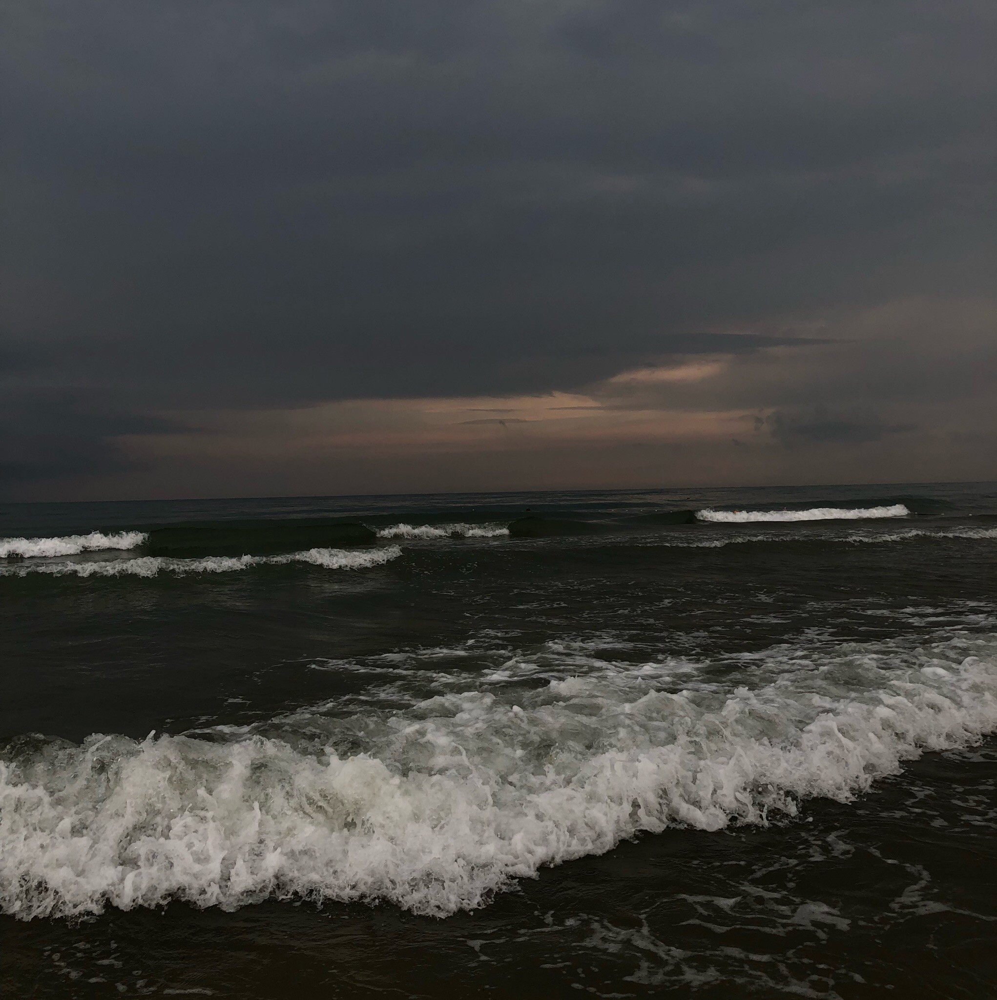

Добрый вечер! Меня зовут Завалина Виктория Константиновна 171-231)
В 2017 году закончила школу и сейчас я учусь в Московском Политехничсеком университете на факультете
"Машиностроение" и направление "Проектирование технологических машин и комплексов".На данный момент прохожу
курсы по веб-разработке. Очень интересный курс, местами понятный, местами нет, но увлекательный. Так же я
увлекаюсь баскетболом и игрой на гитаре не в учебное время.
На данный момент я живу в Москве в Общежитие №2. Москва прекрасный город, немного" грязный, но все же красивый.
Хочу рассказать немного о том что я люблю:
